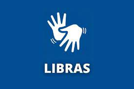

Cursos
Para quem quer ingressar, se atualizar ou aperfeiçoar conhecimentos e estar pronto ara os constantes desafios do mercado de trabalho, os cursos livres 100% a distância garantem a oportunidade de um desenvolvimento contínuo. São diversas ofertas, em vários segmentos, como idiomas, turismo, beleza, informática e hospitalidade. Muitos programas são oferecidos por meio da webTv que utiliza videoaulas transmitidas via streaming como principal recurso didático, facilitando e estimulando o aprendizado.
Ingles

Além da facilidade para se comunicar em outros lugares, o curso de inglês também pode te ajudar a conseguir maiores oportunidades de trabalho, novas vertentes de estudo, outras opções de lazer e muito mais.
Maquiagem
Para maquiadores profissionais, as possibilidades são muitas: atender clientes para eventos especiais (incluindo casamentos), trabalhar com agências de publicidade ou produtoras e até mesmo ensinar automaquiagem para alunas particulares.Logo, fazer um curso profissionalizante de maquiagem se apresenta como um verdadeiro investimento. Depois de dominar as técnicas e investir em seu material de trabalho, é possível lucrar com algo que você faria como hobby!
Recepcionista
Os cursos para recepcionistas são muito úteis para começar a sua vida profissional nesta função. Porque, além de criar um bom currículo, ajuda a ter relações com o público. Assim, é mais fácil conseguir um ótimo espaço no mercado de trabalho de recepcionista.
Libras

Aprender Libras é muito importante para comunicar-se com deficientes, assim, promover a inclusão e expor suas ideias para mais pessoas. Entenda! Libras é a língua brasileira de sinais. Por meio dela que milhares de pessoas portadoras de deficiência auditiva e de fala, conseguem se comunicar.
Administração
Entre os muitos motivos para cursar administração está o amplo mercado de trabalho. Por oferecer várias linhas de aprendizagem, como finanças, marketing, gestão de pessoas, recursos humanos, entre outras, você poderá consolidar sua carreira conforme o setor de sua maior aptidão.